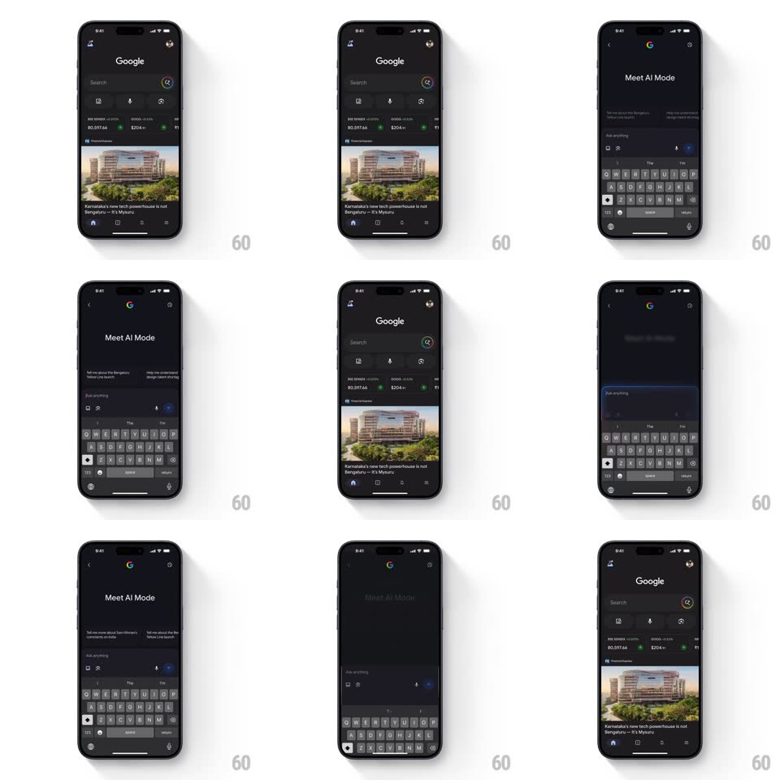

Media
Frame-by-frame

Rebuild this interaction 1:1: Google's AI Mode morph - tapping the AI Mode icon expands the search bar seamlessly into the full-screen "Meet AI Mode" interface, and it collapses back into the bar on exit.

Rebuild this interaction 1:1: Google's AI Mode morph - tapping the AI Mode icon expands the search bar seamlessly into the full-screen "Meet AI Mode" interface, and it collapses back into the bar on exit.
## Integration
Integration: stack-agnostic spec - springs given as stiffness/damping, timed motions as duration + curve; map every value to your framework and animation library of choice.
## Scene
Dark Google home: the search bar (with the AI Mode icon at its trailing edge) over the feed; the expanded state is a full-screen "Meet AI Mode" view with its own input field, suggestion chips, and the keyboard up.
## Motion spec
Pattern: shared-element bar-to-screen morph, ~400ms.
- Expand: the search bar grows from its frame to the full-width AI input (spring ~300/24, 350ms) - the field's corners, background, and the AI icon interpolate continuously so the bar becomes the screen's input.
- The home feed dims and slides down slightly (translateY 20px + fade to 0, 250ms) as the AI Mode content ("Meet AI Mode" title, chips) fades up staggered (200ms, +60ms per block).
- The keyboard rises with the system curve, synced to the bar's expansion.
- Exit: the exact reverse - content fades, the input shrinks back into the home search bar in its original slot.
## Calibration
- One element throughout: the home search bar and the AI input are the same view morphing, never a crossfade between two.
- The AI icon stays pinned at the field's trailing edge through the morph.
## Reduced motion
The AI screen slides up over the home feed (300ms).
## Don't miss
- The morph is reversible along the same geometry.
- Feed content never reflows - it dims away and returns.